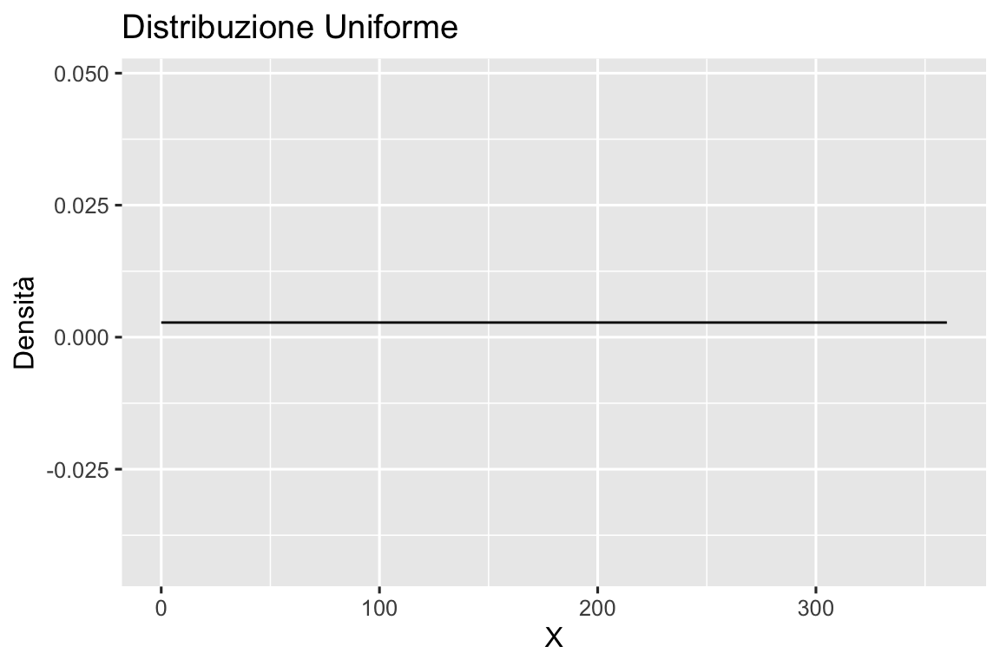
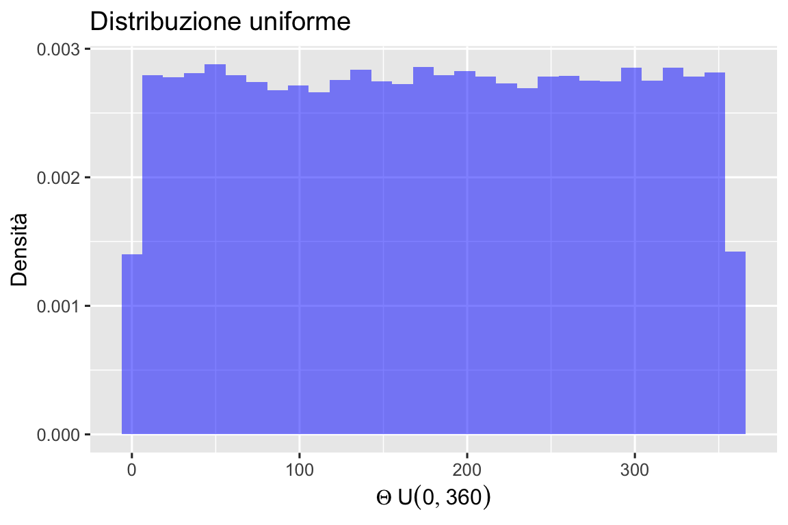
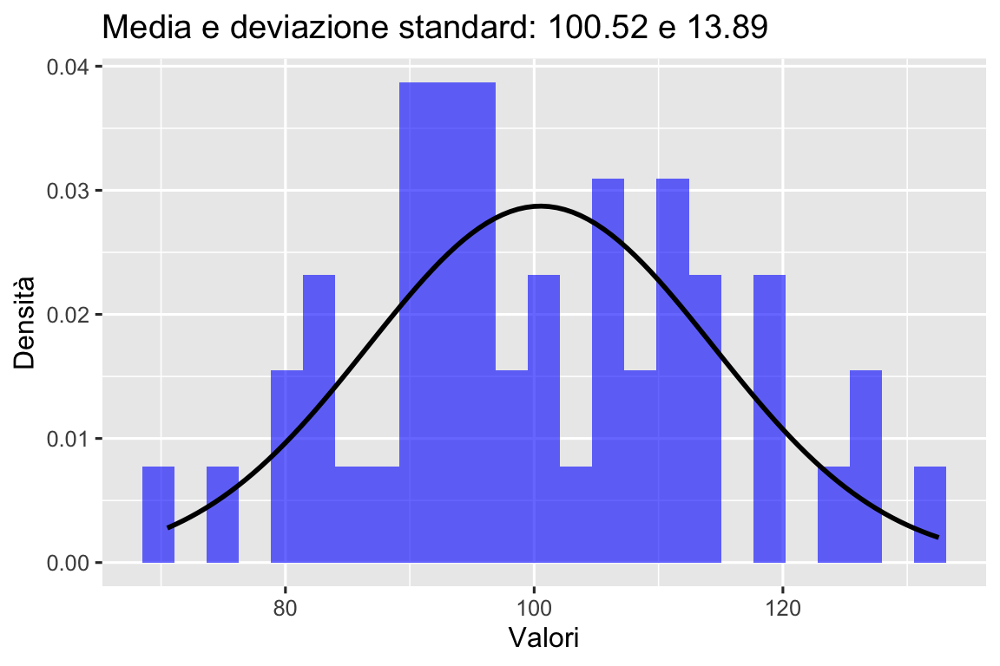
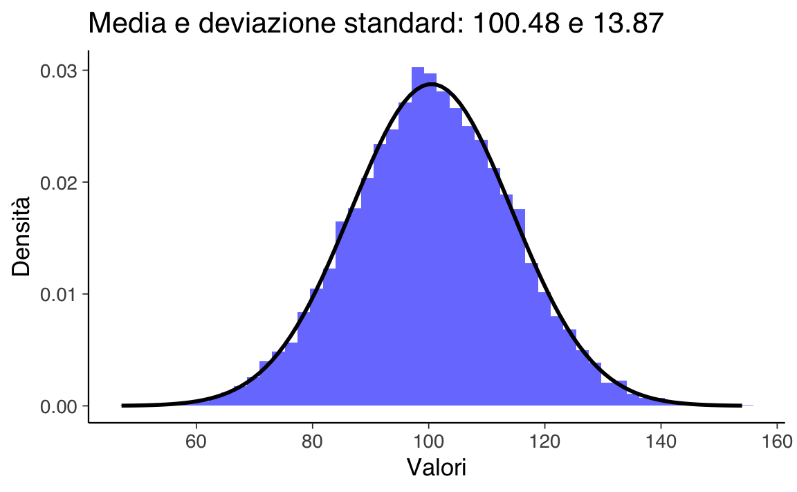

here::here("code", "_common.R") |>
source()
# Load packages
if (!requireNamespace("pacman")) install.packages("pacman")
pacman::p_load(mice)34 La funzione di densità di probabilità
Prerequisiti
Concetti e Competenze Chiave
- Comprendere la differenza tra variabili discrete e continue, con particolare attenzione alle proprietà delle variabili continue.
- Sostituire la funzione di massa di probabilità con la funzione di densità di probabilità per variabili continue.
- Esplorare la distribuzione uniforme continua e la sua densità di probabilità costante.
- Calcolare la probabilità che una variabile casuale continua assuma valori in un intervallo specifico.
- Capire perché la probabilità che una variabile continua assuma un valore specifico è zero.
- Transizione dagli istogrammi alle funzioni di densità di probabilità come rappresentazioni di distribuzioni continue.
- Definire e utilizzare la funzione di ripartizione per calcolare le probabilità cumulative delle variabili continue.
Preparazione del Notebook
Introduzione
In precedenza abbiamo trattato solo variabili casuali discrete, ossia variabili che assumono solo valori interi. Tuttavia, se vogliamo rappresentare grandezze come lunghezze, volumi, distanze o qualsiasi altra proprietà continua del mondo fisico o psicologico, è necessario generalizzare l’approccio utilizzato finora.
Le variabili casuali continue assumono valori reali, e l’insieme dei numeri reali è non numerabile in quanto è più grande dell’insieme degli interi.1 Le leggi della probabilità valgono sia per le variabili casuali discrete che per quelle continue. Tuttavia, la nozione di funzione di massa di probabilità deve essere sostituita dal suo equivalente continuo, la funzione di densità di probabilità. In questo capitolo, il nostro obiettivo è chiarire il significato di questa nozione.
34.1 Spinner e variabili casuali continue uniformi
Consideriamo l’esperimento casuale in cui facciamo ruotare ad alta velocità uno spinner simmetrico imperniato su un goniometro e osserviamo la posizione in cui si ferma, identificata dall’angolo acuto con segno tra il suo asse e l’asse orizzontale del goniometro. Denotiamo con \(\Theta\) la variabile casuale corrispondente alla “pendenza dello spinner”. In questo contesto, l’assunzione che lo spinner sia simmetrico implica che, in ogni prova, la rotazione produce un angolo qualunque da 0 a 360 gradi con la stessa probabilità. In altre parole, un valore \(\Theta\) compreso tra 0 e 36 gradi ha la stessa probabilità di essere osservato di un valore \(\Theta\) compreso tra 200 e 236 gradi. Inoltre, dal momento che 36 gradi corrisponde a un decimo del percorso intorno al cerchio, la probabilità di ottenere un qualsiasi intervallo di 36 gradi sarà sempre uguale al 10%. Più precisamente, si ha \(P(0 \leq \Theta \leq 36) = \frac{1}{10}\) e \(P(200 \leq \Theta \leq 236) = \frac{1}{10}\).
È importante sottolineare che le probabilità sopra menzionate non si riferiscono al fatto che la variabile casuale \(\Theta\) assuma un valore specifico, ma piuttosto all’evento di osservare \(\Theta\) in un intervallo di valori. In generale, la probabilità che la pendenza \(\Theta\) cada in un intervallo specificato è data dalla frazione del cerchio rappresentata dall’intervallo, cioè \(P(\theta_1 \leq \Theta \leq \theta_2) = \frac{\theta_2 - \theta_1}{360}\), per ogni intervallo \([\theta_1, \theta_2]\) tale che \(0 \leq \theta_1 \leq \theta_2 \leq 360\).
Nel caso di una variabile casuale continua, come l’angolo dello spinner, dunque, è facile capire come assegnare una probabilità all’evento in cui la variabile casuale assuma un valore compreso in un intervallo.
34.1.1 Distribuzione uniforme
L’esempio dello spinner rappresenta il “meccanismo generatore dei dati” della variabile casuale continua più semplice, ovvero la distribuzione continua uniforme. In teoria della probabilità, la distribuzione continua uniforme è una distribuzione di probabilità continua che assegna la stessa probabilità a tutti i punti appartenenti ad un intervallo [a, b] contenuto in un certo insieme.
La distribuzione uniforme continua definita sull’intervallo \({\displaystyle S=[a,b]\subset \mathbb {R}}\) viene denotata con \({\displaystyle {\mathcal {U}}(a,b)={\mathcal {U}}([a,b])}\). La sua densità di probabilità è
\[ f(x) = \frac{1}{b-a}, \quad a \leq x \leq b \]
e 0 altrimenti. La distribuzione uniforme continua è caratterizzata dalla sua proprietà di equidistribuzione: tutti gli intervalli di pari lunghezza all’interno dell’intervallo [a, b] hanno la stessa probabilità. In altre parole, se \({\displaystyle [c,d]}\) è un sottointervallo di \({\displaystyle [a,b]}\), allora la probabilità che una variabile casuale continua con distribuzione uniforme in \({\displaystyle [a,b]}\) cada in \({\displaystyle [c,d]}\) è \({\displaystyle (d-c)/(b-a)}\).
Svolgiamo un esercizio con R in cui, per continuare il nostro esempio dello spinner, consideriamo una \(\mathcal {U}(0, 360)\).
# Definire i parametri della distribuzione uniforme
a <- 0
b <- 360
size <- 101
x <- seq(a, b, length.out = size)
y <- dunif(x, min = a, max = b)
data <- data.frame(X = x, Density = y)
ggplot(data, aes(x = X, y = Density)) +
geom_line() +
labs(
x = "X",
y = "Densità",
title = "Distribuzione Uniforme"
) 
Generiamo 100,000 valori casuali di una v.c. \(\Theta \sim \mathcal {U}(0, 360)\).
# Generare dati da una distribuzione uniforme tra 0 e 360
data <- runif(100000, min = 0, max = 360)L’istogramma delle 100,000 realizzazioni di \(\Theta\) è il seguente.
df <- data.frame(Theta = data)
ggplot(df, aes(x = Theta)) +
geom_histogram(
aes(y = ..density..),
bins = 30,
fill = "blue",
alpha = 0.5
) +
labs(
x = expression(Theta ~ U(0, 360)),
y = "Densità",
title = "Distribuzione uniforme"
)
#> Warning: The dot-dot notation (`..density..`) was deprecated in ggplot2 3.4.0.
#> ℹ Please use `after_stat(density)` instead.
È chiaro che, all’aumentare del numero delle realizzazioni \(\Theta\), il profilo dell’istogramma tenderà a diventare una linea retta. Ciò significa che la funzione di densità di una variabile casuale uniforme continua è una costante: \(f(\Theta) = c\).
Dalla figura precedente vediamo che l’area sottesa alla funzione di densità è \((b - a)\cdot c\). Dato che tale area deve essere unitaria, ovvero, \((b - a) \cdot c = 1\), possiamo trovare \(c\) dividendo entrambi i termini per \(b - a\),
\[ c = \frac{\displaystyle{1}}{\displaystyle b - a}. \]
Ovvero, se \(\Theta \sim \mathcal{U}(a, b)\), allora
\[ p_{\Theta}(\theta) = \mathcal{U}(\theta \mid a, b), \]
laddove
\[ \mathcal{U}(\theta \mid a, b) = \frac{1}{b - a}. \]
In conclusione, la densità di una variabile casuale uniforme continua non dipende da \(\theta\) – è costante e identica per ogni possibile valore \(\theta\).
Il valore atteso di \(X \sim \mathcal {U}(a,b)\) è dato da
\[ \mathbb{E} = \frac{b - a}{2}. \]
Nel caso della presente simulazione otteniamo
mean(df$Theta)
#> [1] 180.2548Svolgiamo un altro semplice esercizio. Consideriamo una variabile casuale uniforme \(X\) definita sull’intervallo [0, 100]. Poniamoci il problema di trovare la probabilità \(P(20 < X < 60)\).
Per trovare la soluzione è sufficiente calcolare l’area di un rettangolo di base \(60 - 20 = 40\) e di altezza 1/100. La probabilità cercata è dunque \(P(20 < X < 60) = 40 \cdot 0.01 = 0.4\).
34.2 Il paradosso delle variabili casuali continue
Consideriamo ora la probabilità che la variabile casuale continua assuma un valore specifico, come ad esempio una pendenza dello spinner esattamente uguale a 36 gradi. Sorprendentemente, la risposta è zero:
\[ P(\Theta = 36) = 0. \]
Ciò è dovuto al fatto che se la probabilità di un valore specifico fosse maggiore di zero, allora ogni altro possibile valore dovrebbe avere la stessa probabilità, poiché abbiamo assunto che tutti i valori \(\Theta\) sono egualmente probabili. Ma se sommiamo tutte queste probabilità, il totale sarebbe maggiore di uno, il che è impossibile.
Nel caso delle variabili casuali continue, dobbiamo quindi rinunciare all’idea che ogni singolo valore della variabile casuale possa avere una massa di probabilità maggiore di zero. Invece, una massa di probabilità viene assegnata alla realizzazione della variabile casuale in un intervallo di valori. Questo è ciò che differenzia le variabili casuali continue dalle variabili casuali discrete, dove ogni singolo valore ha una probabilità di massa non nulla. In sintesi, le variabili casuali continue non hanno una massa di probabilità, ma una densità di probabilità.
34.3 Dagli istogrammi alle densità
Le considerazioni precedenti ci fanno comprendere che, a differenza delle variabili casuali discrete, non esiste l’equivalente di una funzione di massa di probabilità per le variabili casuali continue. Invece, esiste una funzione di densità di probabilità che può essere definita in termini di una simulazione. Considerando un numero enorme di casi e facendo tendere l’ampiezza \(\Delta\) di ciascuna classe a 0, il profilo dell’istogramma delle frequenze delle classi di ampiezza \(\Delta\) tende a diventare una curva continua. Tale curva continua \(f(x)\) è detta funzione di densità di probabilità.
In un istogramma, l’area di ogni barra è proporzionale alla frequenza relativa delle osservazioni nell’intervallo considerato. Dato che tutti gli intervalli hanno la stessa ampiezza, l’altezza di ogni barra sarà proporzionale alla frequenza relativa delle osservazioni nell’intervallo. Nella simulazione, possiamo pensare all’area di ciascuna barra dell’istogramma come alla stima della probabilità che la variabile casuale assuma un valore nell’intervallo considerato. Con l’aumentare del numero di osservazioni \(M\), le probabilità stimate si avvicinano sempre di più ai valori effettivi della probabilità. Inoltre, all’aumentare del numero degli intervalli (quando l’ampiezza \(\Delta\) dell’intervallo tende a 0), il profilo dell’istogramma tende a diventare una curva continua. Tale curva continua è appunto la funzione di densità di probabilità della variabile casuale.
In precedenza, nella statistica descrittiva, abbiamo già incontrato una rappresentazione che ha lo stesso significato della funzione di densità, ovvero il kernel density plot. La stima della densità del kernel (KDE), infatti, è un metodo non parametrico utilizzato per stimare la funzione di densità di probabilità di una variabile casuale.
Per fare un esempio, generiamo 50 valori dalla distribuzione del quoziente di intelligenza. Stampiamo i primi 5 valori.
# Definire i parametri della distribuzione normale
mu <- 100
sigma <- 15
size <- 50
# Generare i dati
set.seed(123) # Per riproducibilità
x <- rnorm(size, mean = mu, sd = sigma)
# Mostrare i primi 5 valori
head(x, 5)
#> [1] 91.59287 96.54734 123.38062 101.05763 101.93932Creiamo ora un istogramma a cui sovrapponiamo la funzione di densità Normale con parametri corrispondenti alla media e deviazione standard del campione. Con poche osservazioni, non c’è una buona corrispondenza tra l’istogramma e la curva continua che abbiamo chiamato “funzione di densità”.
# Calcolare la media e la deviazione standard dei dati
mu <- mean(x)
std <- sd(x)
# Creare un grafico dell'istogramma e della curva di densità
data_frame <- data.frame(X = x)
xmin <- min(x)
xmax <- max(x)
density_data <- data.frame(
X = seq(xmin, xmax, length.out = 100),
Density = dnorm(seq(xmin, xmax, length.out = 100), mean = mu, sd = std)
)
ggplot(data_frame, aes(x = X)) +
geom_histogram(
aes(y = ..density..),
bins = 25,
fill = "blue",
alpha = 0.6
) +
geom_line(
data = density_data,
aes(x = X, y = Density),
color = "black",
size = 1
) +
labs(
title = sprintf("Media e deviazione standard: %.2f e %.2f", mu, std),
x = "Valori",
y = "Densità"
)
#> Warning: Using `size` aesthetic for lines was deprecated in ggplot2 3.4.0.
#> ℹ Please use `linewidth` instead.
Ora aumentiamo il numero di osservazioni. In questo caso consideriamo 20,000 valori del QI. Generiamo dunque una figura simile alla precedente, solo considerando un campione di dati più grande.
# Generare dati normali
size <- 10000
set.seed(123) # Per riproducibilità
x <- rnorm(size, mean = mu, sd = std)
# Calcolare la media e la deviazione standard dei dati
mu <- mean(x)
std <- sd(x)
# Creare il grafico dell'istogramma e della curva di densità
data_frame <- data.frame(X = x)
xmin <- min(x)
xmax <- max(x)
density_data <- data.frame(
X = seq(xmin, xmax, length.out = 100),
Density = dnorm(seq(xmin, xmax, length.out = 100), mean = mu, sd = std)
)
ggplot(data_frame, aes(x = X)) +
geom_histogram(
aes(y = ..density..),
bins = 50,
fill = "blue",
alpha = 0.6
) +
geom_line(
data = density_data,
aes(x = X, y = Density),
color = "black",
size = 1
) +
labs(
title = sprintf("Media e deviazione standard: %.2f e %.2f", mu, std),
x = "Valori",
y = "Densità"
)
Ora vediamo che c’è una corrispondenza molto buona tra il profilo dell’istogramma e la curva continua. Questo ci consente la seguente interpretazione: la funzione di densità è una curva che approssima il profilo di un istogramma, quando consideriamo un grande numero di osservazioni. In altre parole, una funzione di densità non è altro che un (profilo di un) istogramma nel caso di un numero infinito di osservazioni e intervalli di ampiezza \(\Delta\) infinitamente piccoli.
In un istogramma, l’area di ciascuna barra è proporzionale alla frequenza relativa delle osservazioni in quel’intervallo. Perché tutti gli intervalli hanno la stessa ampiezza, anche l’altezza di ciascuna barra sarà proporzionale alla frequenza relativa delle osservazioni in quel’intervallo.
Nella simulazione, possiamo pensare all’area di ciascuna barra dell’istogramma come alla stima della probabilità che la variabile casuale assuma un valore compreso nell’intervallo considerato. All’aumentare del numero \(M\) di osservazioni, le probabilità stimate si avvicinano sempre di più ai veri valori della probabilità. All’aumentare del numero degli intervalli (quando l’ampiezza \(\Delta\) dell’intervallo \(\rightarrow\) 0), il profilo dell’istogramma tende a diventare una curva continua. Tale curva continua è la funzione di densità di probabilità della variabile casuale.
Nella statistica descrittiva abbiamo già incontrato una rappresentazione che ha lo stesso significato della funzione di densità, ovvero il kernel density plot. La stima della densità del kernel (KDE), infatti, è un metodo non parametrico per stimare la funzione di densità di probabilità di una variabile casuale.
34.4 Interpretazioni Bayesiana e Frequentista della Funzione di Densità di Probabilità (PDF)
Abbiamo introdotto la funzione di densità di probabilità come limite del profilo di un istogramma, una descrizione intuitiva e utile per comprendere il concetto di densità. Questa interpretazione corrisponde, tuttavia, alla visione frequentista della densità di probabilità. Nella statistica Bayesiana, l’interpretazione è diversa e merita una spiegazione separata.
Nell’approccio Bayesiano, un parametro è considerato una “variabile casuale” che segue una distribuzione di valori, anziché un valore fisso. La Figura 34.1, vedi 34.1 illustra le diverse interpretazioni di una PDF per una quantità reale \(x\). Queste interpretazioni valgono sia che \(x\) rappresenti un parametro incognito sia che si tratti di un dato osservato.
Nel pannello di sinistra, vediamo l’interpretazione frequentista di \(p(x)\): la PDF rappresenta una collezione ipotetica di ripetizioni di esperimenti, in cui \(x\) può assumere diversi valori. La PDF corrisponde quindi a un istogramma limite di questi valori, distribuiti secondo \(p(x)\).
Il pannello di destra, invece, raffigura l’interpretazione Bayesiana, in cui la PDF rappresenta l’incertezza sul valore di \(x\) per un singolo caso specifico. In questo caso, la probabilità si distribuisce lungo i possibili valori che \(x\) potrebbe assumere, visualizzata dalla sfumatura lungo l’asse \(x\).
In altre parole, nell’interpretazione frequentista, è il valore di \(x\) a essere distribuito in \(p(x)\) (attraverso ripetizioni dell’esperimento), mentre nell’interpretazione Bayesiana è la probabilità stessa a distribuirsi sui possibili valori di \(x\) nel caso analizzato. Una PDF Bayesiana può essere vista come analoga a una densità di materia \(\rho(x)\) in meccanica classica: è la probabilità che si distribuisce lungo i possibili valori, e non i valori stessi di \(x\).

34.5 Funzione di densità di probabilità
Da un punto di vista matematico, l’intuizione precedente si può esprimere nel modo seguente.
Per descrivere le probabilità che possono essere associate ad una variabile casuale continua \(X\) è necessario definire una funzione \(p(X)\) che deve soddisfare le seguenti due proprietà:
- \(p(x) \geq 0, \forall x\), ovvero, l’ordinata della funzione di densità è 0 o positiva;
- \(\int_{-\infty}^{\infty} p(x) \,\operatorname {d}\!x = 1\), ovvero, l’area sottesa dalla \(p(x)\) è unitaria2;
- \(p(a < x < b) = \int_a^b p(x) \,\operatorname {d}\!x\), se \(a \leq b\), ovvero, l’area sottesa dalla \(p(y)\) tra due punti \(a\) e \(b\) corrisponde alla probabilità che la v.c. \(x\) assuma un valore compresto tra questi due estremi.
Interpretazione. È possibile che \(p(x) > 1\), quindi una densità di probabilità non può essere interpretata come una probabilità. Piuttosto, la densità \(p(x)\) può essere utilizzata per confrontare la credibilità relativa che può essere assegnata a diversi valori \(x\). Considerata una variabile casuale \(X\) di cui è disponibile un insieme di realizzazioni, possiamo dire che, se consideriamo due valori \(x_k\) e \(x_l\) con \(p(x_k) > p(x_l)\), allora possiamo concludere che è più credibile, in termini relativi, osservare realizzazioni \(X\) nell’intorno di \(x_k\) piuttosto che nell’intorno di \(x_l\).
34.6 La funzione di ripartizione per una variabile casuale continua
Per le variabili casuali continue, la funzione di ripartizione (ovvero, la distribuzione cumulativa) è definita esattamente come nel caso delle variabili casuali discrete:
\[ F_{\Theta}(\theta) = P(\Theta \leq \theta). \]
Cioè, è la probabilità che la variabile casuale \(\Theta\) assuma un valore minore di o uguale a \(\theta\).
Come nel caso discreto, la funzione di ripartizione di una v.c. continua può essere utilizzata per calcolare la probabilità che la v.c. assuma valori in un certo intervallo.
34.7 Riflessioni Conclusive
La funzione di densità di probabilità (PDF) è uno strumento fondamentale per descrivere distribuzioni di variabili continue. Un principio essenziale alla base di questa funzione è che la probabilità che una variabile aleatoria continua assuma un valore esatto è pari a zero. Matematicamente, ciò deriva dal fatto che l’area sotto la curva di densità in un punto singolo è sempre zero.
Questa concezione implica due conseguenze importanti:
- La probabilità può essere calcolata solo per intervalli di valori, non per punti specifici.
- Eventi con probabilità zero non sono necessariamente impossibili.
Da questa seconda implicazione emerge un apparente paradosso: come possiamo conciliare il fatto che eventi osservabili (ad esempio, colpire il centro esatto di un bersaglio) abbiano probabilità zero?
Questo paradosso solleva due domande cruciali:
- È possibile confrontare le “possibilità” di eventi diversi che hanno tutti probabilità zero?
- Come può l’unione di infiniti eventi con probabilità zero (ogni punto specifico di un intervallo) dare origine a un evento certo (scegliere un punto qualsiasi nell’intervallo)?
Il “paradosso della probabilità zero” richiama alla mente il famoso paradosso di Zenone sulla freccia: se in ogni istante la freccia è ferma, come può essa muoversi? In entrambi i casi, siamo posti di fronte a una sfida concettuale: come può una somma di “nulla” (eventi con probabilità zero) dare origine a “qualcosa” (un evento con probabilità certa)?
Una soluzione moderna a questo enigma è emersa negli anni ’60 con il lavoro di Abraham Robinson sugli infinitesimi. Gli infinitesimi sono numeri infinitamente piccoli ma non nulli, che esistono tra zero e qualsiasi numero positivo reale. Questa teoria consente di assegnare probabilità infinitesimali a eventi che, nella teoria classica, avrebbero probabilità zero.
Applicando questa idea al nostro paradosso, possiamo concludere che:
- La probabilità di colpire un punto specifico non è zero, ma infinitesimale.
- La probabilità di colpire uno tra due punti specifici è maggiore di quella di colpire un singolo punto, anche se la differenza è infinitesimale.
Questo approccio risolve il paradosso permettendo di distinguere tra eventi che nella teoria classica erano tutti assegnati a probabilità zero. Inoltre, spiega come l’unione di molti eventi con probabilità infinitesimale possa portare a un evento con probabilità uno.
L’introduzione degli infinitesimi non è solo un artificio matematico, ma rappresenta un ritorno alle idee originarie di Newton e Leibniz, fornendo una base rigorosa per trattare l’infinitamente piccolo in matematica. Questa teoria offre un nuovo modo di concepire concetti come l’infinito e la continuità, con applicazioni che si estendono ben oltre la teoria della probabilità.
34.8 Informazioni sull’Ambiente di Sviluppo
sessionInfo()
#> R version 4.4.2 (2024-10-31)
#> Platform: aarch64-apple-darwin20
#> Running under: macOS Sequoia 15.1.1
#>
#> Matrix products: default
#> BLAS: /Library/Frameworks/R.framework/Versions/4.4-arm64/Resources/lib/libRblas.0.dylib
#> LAPACK: /Library/Frameworks/R.framework/Versions/4.4-arm64/Resources/lib/libRlapack.dylib; LAPACK version 3.12.0
#>
#> locale:
#> [1] C/UTF-8/C/C/C/C
#>
#> time zone: Europe/Zagreb
#> tzcode source: internal
#>
#> attached base packages:
#> [1] stats graphics grDevices utils datasets methods base
#>
#> other attached packages:
#> [1] mice_3.16.0 MASS_7.3-61 viridis_0.6.5 viridisLite_0.4.2
#> [5] ggpubr_0.6.0 ggExtra_0.10.1 gridExtra_2.3 patchwork_1.3.0
#> [9] bayesplot_1.11.1 psych_2.4.6.26 scales_1.3.0 markdown_1.13
#> [13] knitr_1.49 lubridate_1.9.3 forcats_1.0.0 stringr_1.5.1
#> [17] dplyr_1.1.4 purrr_1.0.2 readr_2.1.5 tidyr_1.3.1
#> [21] tibble_3.2.1 ggplot2_3.5.1 tidyverse_2.0.0 rio_1.2.3
#> [25] here_1.0.1
#>
#> loaded via a namespace (and not attached):
#> [1] tidyselect_1.2.1 farver_2.1.2 fastmap_1.2.0 pacman_0.5.1
#> [5] promises_1.3.1 rpart_4.1.23 digest_0.6.37 timechange_0.3.0
#> [9] mime_0.12 lifecycle_1.0.4 survival_3.7-0 magrittr_2.0.3
#> [13] compiler_4.4.2 rlang_1.1.4 tools_4.4.2 utf8_1.2.4
#> [17] yaml_2.3.10 ggsignif_0.6.4 labeling_0.4.3 htmlwidgets_1.6.4
#> [21] mnormt_2.1.1 abind_1.4-8 miniUI_0.1.1.1 withr_3.0.2
#> [25] nnet_7.3-19 grid_4.4.2 fansi_1.0.6 jomo_2.7-6
#> [29] xtable_1.8-4 colorspace_2.1-1 iterators_1.0.14 cli_3.6.3
#> [33] rmarkdown_2.29 generics_0.1.3 tzdb_0.4.0 minqa_1.2.8
#> [37] splines_4.4.2 parallel_4.4.2 vctrs_0.6.5 boot_1.3-31
#> [41] glmnet_4.1-8 Matrix_1.7-1 jsonlite_1.8.9 carData_3.0-5
#> [45] car_3.1-3 hms_1.1.3 mitml_0.4-5 rstatix_0.7.2
#> [49] Formula_1.2-5 foreach_1.5.2 glue_1.8.0 pan_1.9
#> [53] nloptr_2.1.1 codetools_0.2-20 stringi_1.8.4 gtable_0.3.6
#> [57] shape_1.4.6.1 later_1.4.0 lme4_1.1-35.5 munsell_0.5.1
#> [61] pillar_1.9.0 htmltools_0.5.8.1 R6_2.5.1 rprojroot_2.0.4
#> [65] evaluate_1.0.1 shiny_1.9.1 lattice_0.22-6 backports_1.5.0
#> [69] broom_1.0.7 httpuv_1.6.15 Rcpp_1.0.13-1 nlme_3.1-166
#> [73] xfun_0.49 pkgconfig_2.0.3Bibliografia
Loredo, T. J., & Wolpert, R. L. (2024). Bayesian inference: more than Bayes’s theorem. Frontiers in Astronomy and Space Sciences, 11, 1326926.
Georg Cantor dimostrò che era impossibile mappare uno a uno i reali negli interi, dimostrando così che l’insieme dei reali è non numerabile.↩︎
Per quel che riguarda la notazione dell’integrale, ovvero \(\int_x \,\operatorname {d}\!x\), rimando alla discussione di S.P. Thompson: https://calculusmadeeasy.org/1.html↩︎